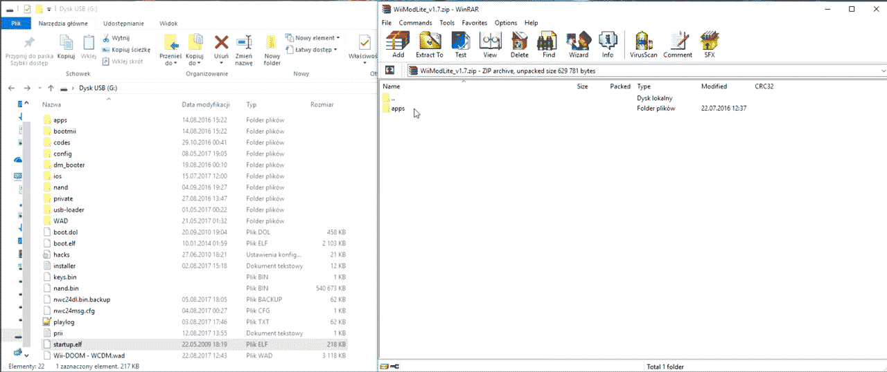
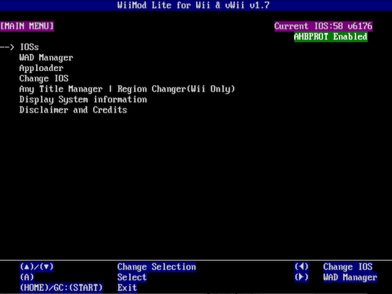
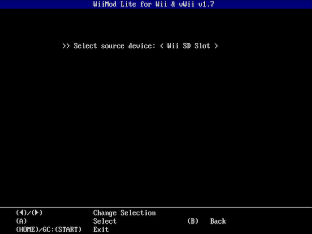
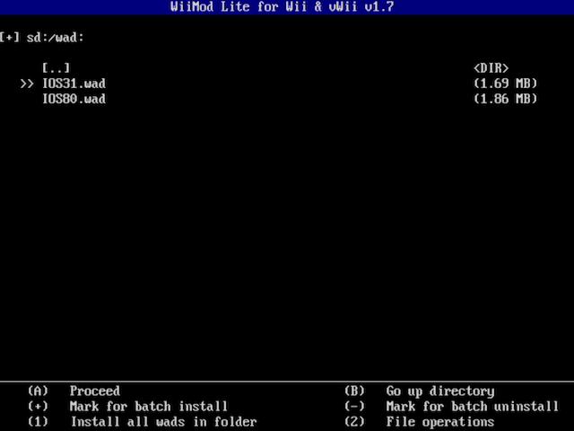
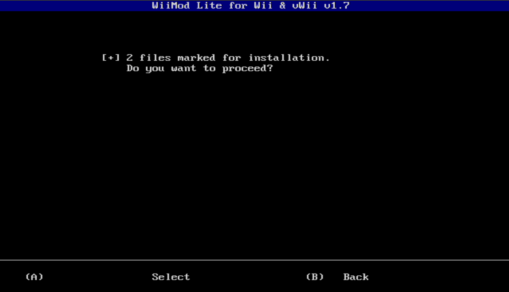
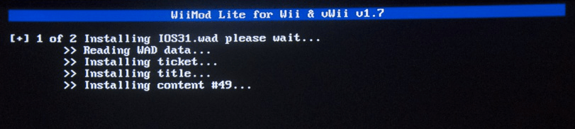
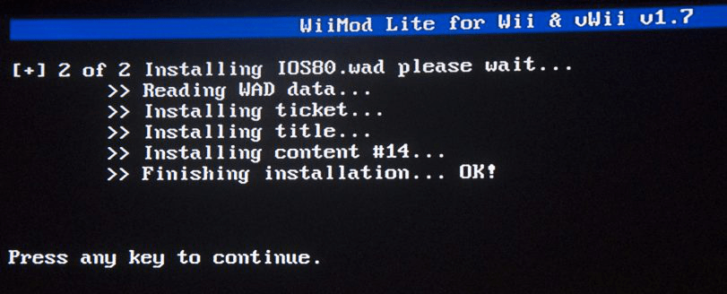

Wii Mod Lite
Pentru suport în Engleză, cereți ajutor la RiiConnect24 pe Discord.
Dacă ai nevoie de ajutor pentru orice legat de acest tutorial, te rugăm să te alături serverului de discord RiiConnect24 (recomandat) sau scrie-ne un email la [email protected].
Acest ghid va spune cum să instalezi fișiere WAD pe consola ta cu Wii Mod Lite. Managerul WAD ales este Wii Mod Lite, dar există și altele precum YAWMM.
Nu recomandăm să folosești “WAD Manager” de Waninkoko.
De ce ai nevoie
- Un card SD sau o unitate USB
- Wii Mod Lite
Instrucțiuni
Secțiunea I - Descărcare
- Extrage Wii Mod Lite și pune-l în dosarul
appsdin cardul tău SD sau unitatea ta USB.  - Introduce cardul tău SD sau unitatea ta USB în Wii, și pornește Wii Mod Lite din Homebrew Channel.
Secțiunea II - Rularea
Vei folosi +Control Pad-ul pentru a utiliza această unealtă.
- Alege
WAD Manager.  - Alege
Wii SD Slotdacă vrei să folosești un card SD sauUSB Mass Storage Devicedacă vrei să folosești o unitate USB.  - Selectează WAD-ul pe care vrei să-l instalezi. În acest exemplu, vom instala IOS-ul modificat necesar pentru RiiConnect24. Poți marca mai multe WAD-uri deodată apăsând Butonul +. 
- Apasă “A” de două ori pentru a începe instalarea.  
- Dacă
Finishing installation... OK!este afișat, WAD-ul a fost instalat cu succes. 